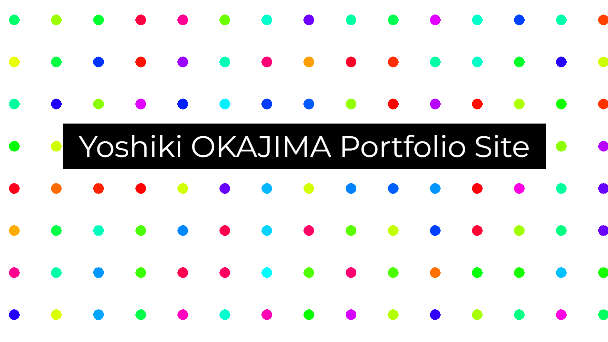
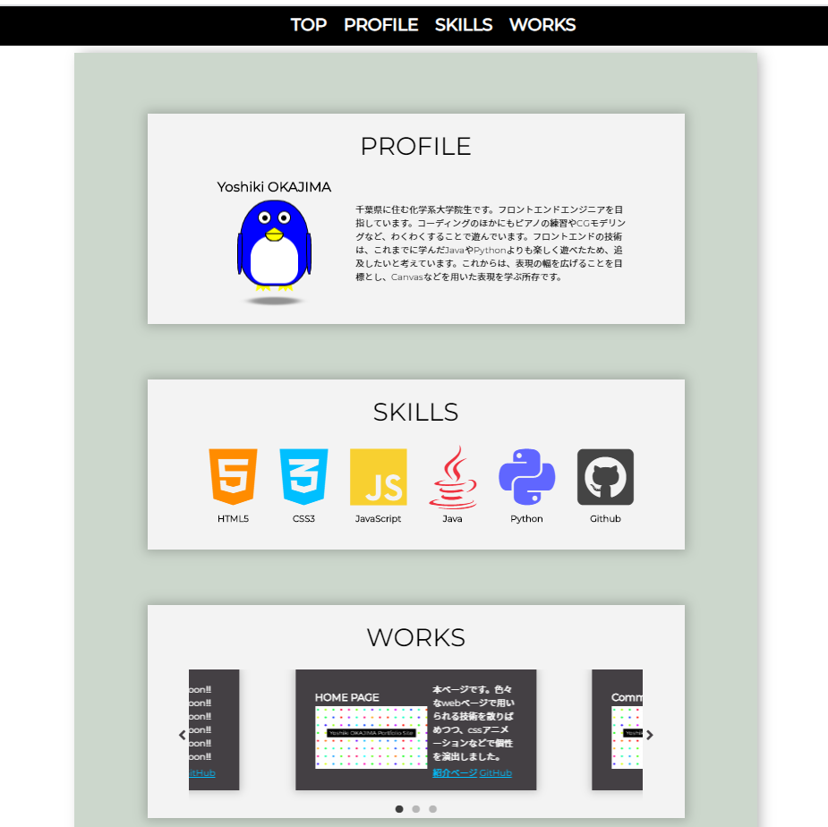

- 
- 
-
Languages: HTML5/CSS3(SCSS)/JavaScript
-
Libraries: jQuery/slick/ScrollReveal
-
Others: Emmet/Font Awesome/Git/Google Fonts
-
<Overall>
スキルの広さと深さについて、バランスよく配置したいと考えてデザインしました。HTML/CSSに加えjQueryやその他プラグインを必要に応じて満遍なく実装し、その工程においてもEmmetやGitによる効率化を図りました。結果としてパララックス効果やレスポンシブ対応、スクロールアニメーションといった多用される技術を活用できたと考えています。また、トップのドット背景とプロフィールのペンギンは自ら仕組みを考え、調べながら実装しました。その過程でCSS/HTML/JavaScriptへの理解が深まったと思います。
-
<Site Top>
背景のドットについて工夫しました。インタラクティブな機能として、各ドットを出入りするマウスの方向に対応した色を示すようにコーディングしました。出入り時の座標をjQueryにより取得し、各点を結んだ線分の角度を色に変換するため、HSL色空間を採用しました。ただのドットでは円が小さく、マウスポインタが通過しないことがあるため、cssとしてradial-gradientを適用し、見かけ上の円よりも大きい範囲で当たり判定がされます。反省点は、HTML要素が多くなってしまい読み込みに時間がかかる場合があることです。また、パララックス効果の実装にあたってはナビゲーションバーなどとの兼ね合いを考えて試行錯誤しました。
-
<Navigation Bar>
ナビゲーションバーの挙動を工夫しました。Top画面の下にあったナビゲーションバーを上端までスクロールすると上端に張り付きます。jQueryによりナビゲーションバーのスクロール位置を監視、cssの適用を切り替えることで実現しています。レスポンシブ対応として、メディアポートを通したナビゲーションドロアーへの切り替わりも実装しました。
-
<PROFILE>
ペンギンのcssアニメーションを作りこみました。各パーツはbefore・after疑似要素やボックスシャドウを多用し、最少のHTML要素で構成しました。アニメーションにおいては重力加速度や足の角度を考えて動きを微調整しました。ペンギンの目はマウスを追跡するようjQueryを設定しました。ペンギンを描画したのは、パーツを単純化しやすいと考えたためです。
-
<SKILLS>
アイコンフォントを採用し、一目でスキル構成がわかるように努めました。cssで色設定を行えるよう、<i>要素でCDNから取り込む方式を採っています。
-
<WORKS>
レスポンシブ対応の容易なjQueryプラグインslickを用い、複数の作品をコンパクトにまとめ得るデザインにしました。シンプルなデザインは、直感的な操作を助けると考えます。